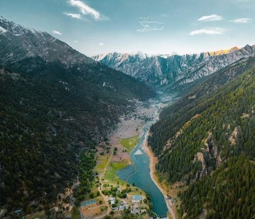
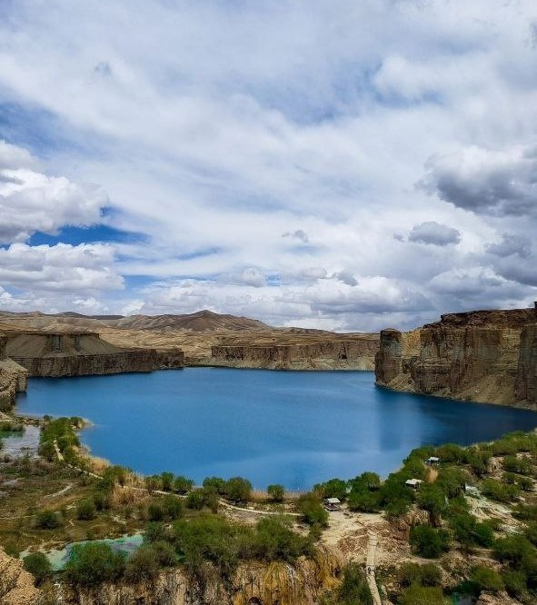

Sightseeing Places of Afghanistan

NURISTAN
ABOUT
This is a collection of the most beautiful provinces of Afghanistan, including Bamiyan, Nuristan, Kabul, and Herat. It also features the most beautiful tourist attractions, such as Band-e Amir in Bamiyan, the beautiful valleys of Nuristan, and scenic locations in Kabul and Herat.
